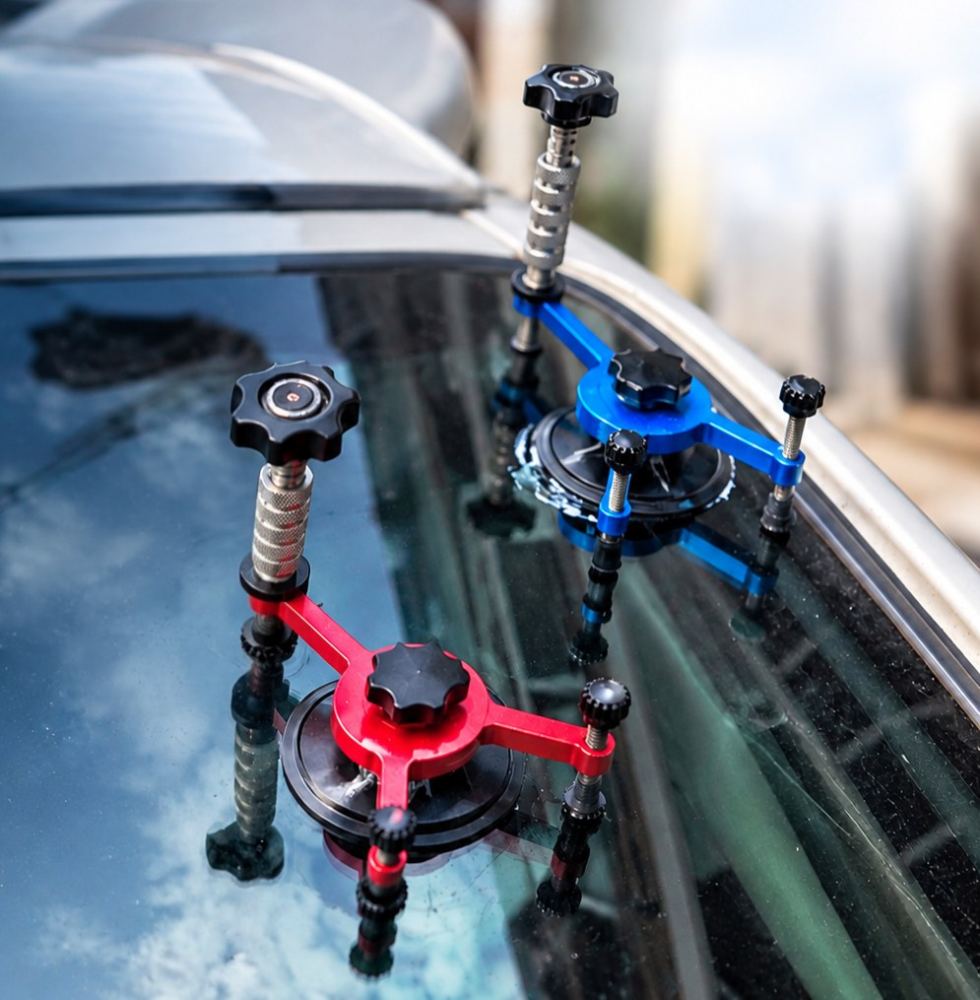
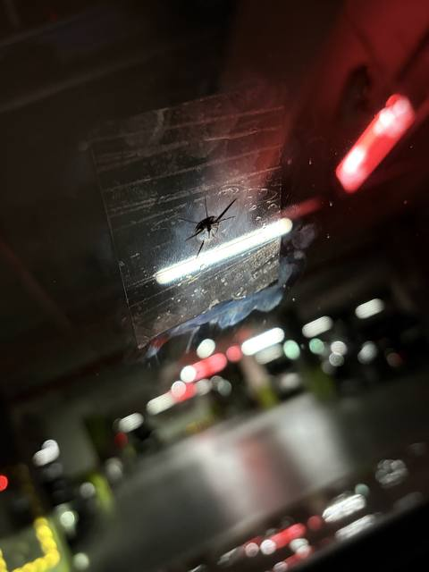
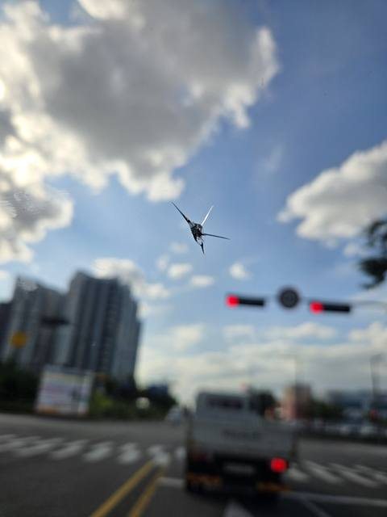
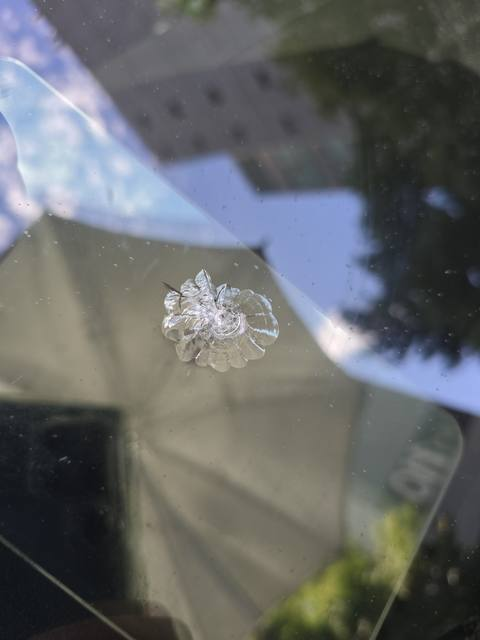
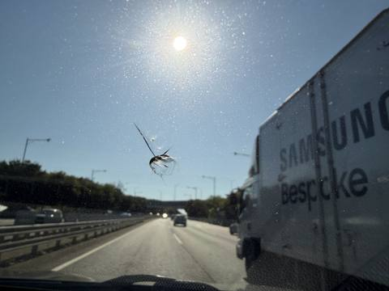
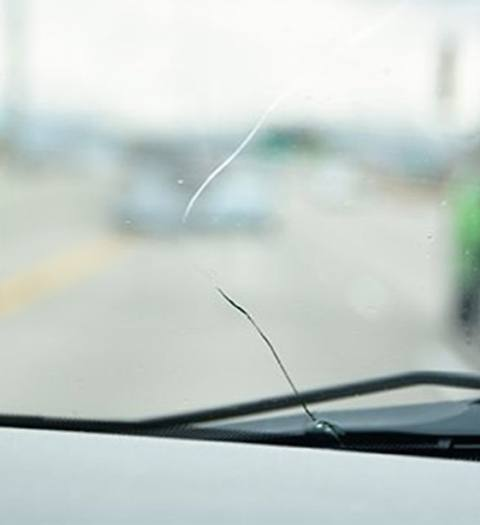

자동차 유리복원은 앞유리에 생긴 충격으로 손상됐거나 길게 번진 금을 유리를 교체하지 않고 손상 부위만 메우고 접합해 더 이상 커지는 것을 예방하고 원래의 강도와 시야를 최대한 되살리는 시공입니다. 유리 자체를 바꾸는 것이 아니라서 순정 유리를 유지할 수 있고, 교체 대비 시간과 비용 부담이 훨씬 적습니다.
골든타임을 놓치지 마세요.
자동차 유리복원은 앞유리에 생긴 충격으로 손상됐거나 길게 번진 금을 유리를 교체하지 않고 손상 부위만 메우고 접합해 더 이상 커지는 것을 예방하고 원래의 강도와 시야를 최대한 되살리는 시공입니다. 유리 자체를 바꾸는 것이 아니라서 순정 유리를 유지할 수 있고, 교체 대비 시간과 비용 부담이 훨씬 적습니다.
동전 크기 이하의 물방울 또는 눈썹 모양 손상. 발견 즉시 조치하면 90% 이상 복원될 가능성이 높습니다.
선 모양으로 길게 번진 금. 길이와 위치에 따라 복원 가능 여부가 갈리므로 사진 확인이 필요합니다.
클릭 또는 좌우로 밀어서 파손된 사진을 확인해보세요.






| 손상 유형 | 기준 |
|---|---|
| 단순 돌빵 | 동전 크기 이하, 시야 방해 없는 위치 |
| 확장된 돌빵 | 금이 살짝 번지기 시작한 상태 |
| 롱크랙 | 길게 금이 간 경우, 복원 가능 여부는 사진 확인 후 안내 |
정확한 비용은 손상 부위 사진으로 빠르게 안내해 드립니다.
아래 해당 지역을 클릭하시면 해당 지역 담당자에게 문자로 간편하게 문의하실 수 있습니다. 목록에 없는 지역도 문의해 주세요.
교체가 필요할지 수리가 가능할지 가장 합리적인 방법을 안내합니다.